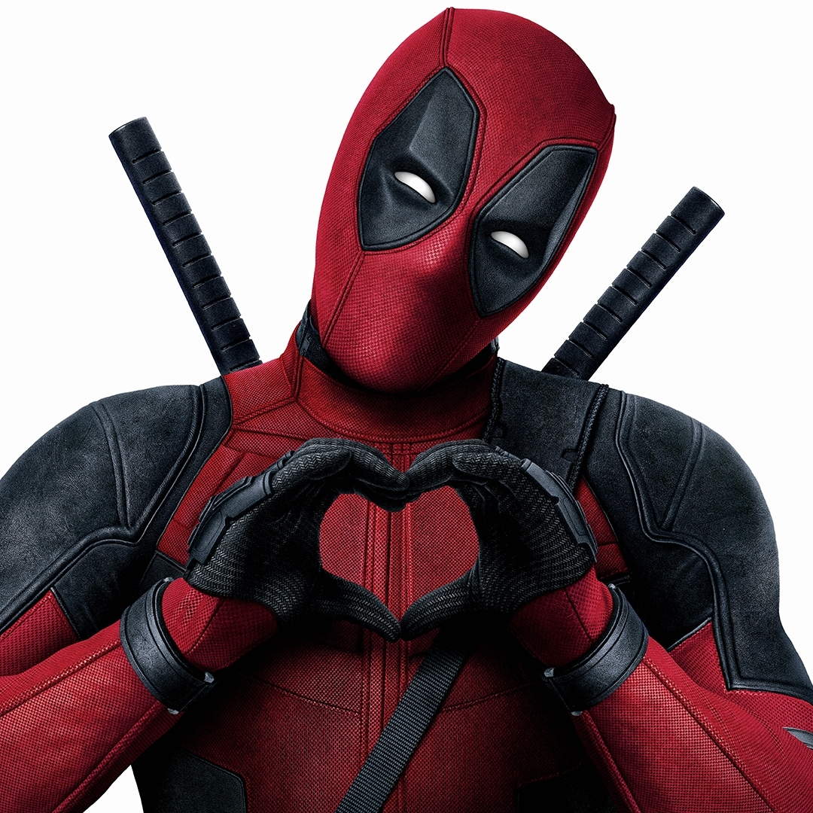
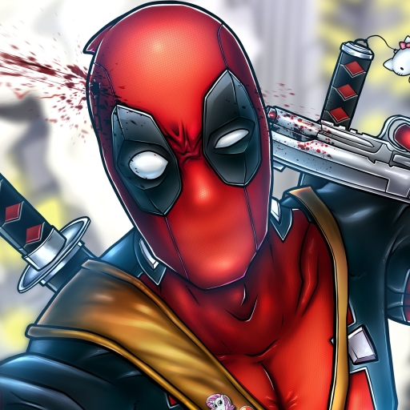
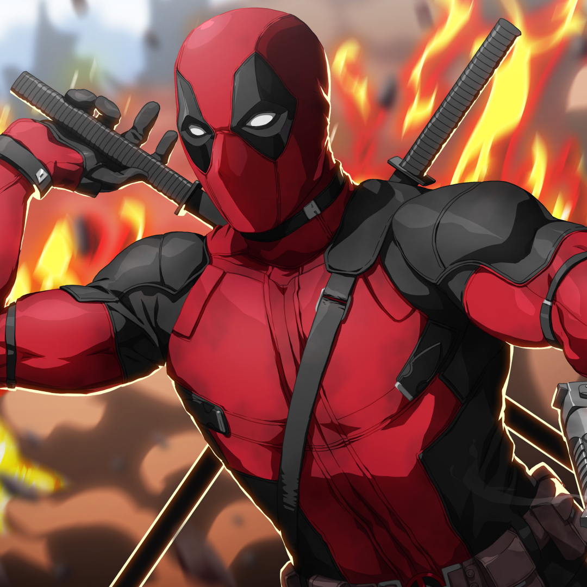

Deadpool (Wade Winston Wilson) é um personagem fictício do universo Marvel, que atua geralmente como anti-herói e ocasionalmente como vilão. Deadpool, cujo nome verdadeiro é Wade Winston Wilson, é um mercenário canadense marcado por ser falastrão, violento e principalmente por ser comediante e a partir ficou conhecido como o "mercenário tagarela". Tem também o fator de cura que o faz sobreviver aos piores ferimentos.
Atua geralmente como anti-herói e ocasionalmente como vilão. Assim como Wolverine, Deadpool é um produto do Projeto Arma X, do governo canadense, embora seu local de nascimento seja desconhecido, pois esconderam-no do mundo.



